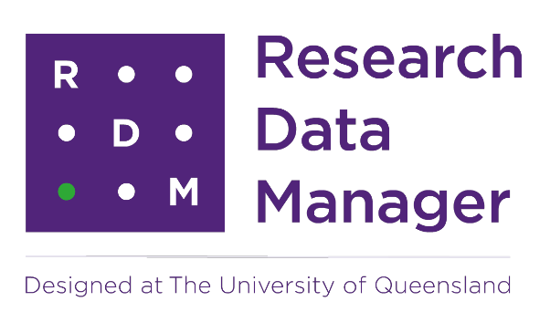
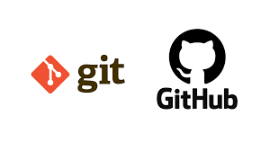
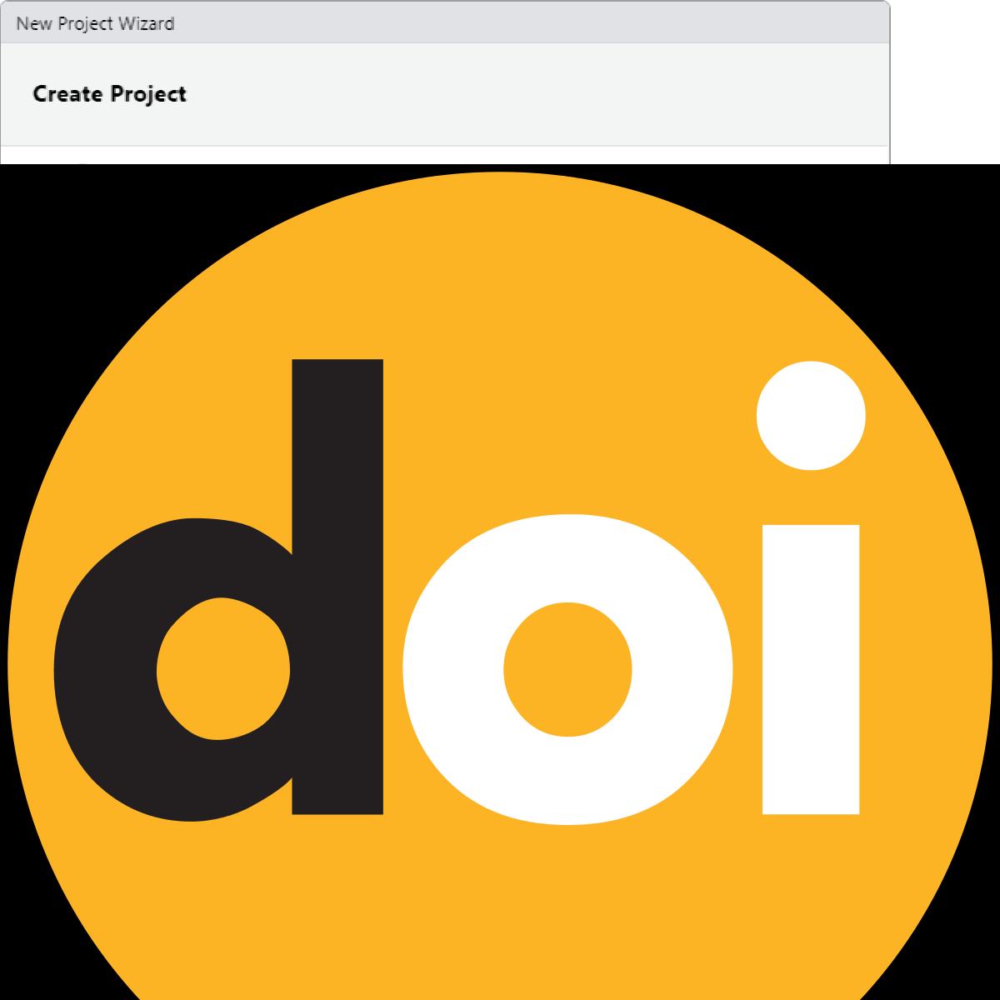

What is Data Management?
Data management refers to the comprehensive set of practices, policies, and processes used to manage data throughout its lifecycle (Corea 2019, chap. 1). This involves ensuring that data is collected, stored, processed, and maintained in a way that it can be effectively used for analytical purposes. Good data management is crucial for enabling accurate, reliable, and meaningful analysis.
Key components of data management in data analytics include:
Data Collection and Acquisition: Gathering data from various sources, which can include databases, APIs, sensors, web scraping, and more. The goal is to ensure the data is collected in a systematic and consistent manner.
Data Storage: Utilising databases, data warehouses, data lakes, or cloud storage solutions to store collected data securely and efficiently. This ensures that data is easily accessible for analysis.
Data Cleaning and Preparation: Involves identifying and correcting errors or inconsistencies in the data to improve its quality. This step is critical for ensuring the accuracy of any subsequent analysis.
Data Integration: Combining data from different sources into a single, unified dataset. This often involves ETL (Extract, Transform, Load) processes where data is extracted from different sources, transformed into a consistent format, and loaded into a central repository.
Data Governance: Establishing policies and procedures to ensure data is managed properly. This includes defining roles and responsibilities, ensuring data privacy and security, and maintaining compliance with regulations.
Data Security: Implementing measures to protect data from unauthorised access, breaches, and other threats. This involves encryption, access controls, and regular security audits.
Data Analysis: Using statistical methods, algorithms, and software tools to analyze data and extract meaningful insights. This can involve descriptive, predictive, and prescriptive analytics.
Data Visualisation: Presenting data in graphical or pictorial formats such as charts, graphs, and dashboards to help users understand trends, patterns, and insights more easily.
Data Quality Management: Continuously monitoring and maintaining the accuracy, consistency, and reliability of data. This involves data profiling, validation, and auditing.
Metadata Management: Managing data about data, which includes documenting the data’s source, format, and usage. Metadata helps in understanding the context and provenance of the data.
Data Lifecycle Management: Managing data through its entire lifecycle, from initial creation and storage to eventual archiving and deletion. This ensures that data is managed in a way that supports its long-term usability and compliance with legal requirements.
Effective data management practices ensure that data is high quality, well-organised, and accessible, which is essential for accurate and actionable data analytics. By implementing robust data management strategies, organisations can improve the reliability of their analyses, make better-informed decisions, and achieve greater operational efficiency.
For further reading and deeper insights, consider these resources: - Data Management Association International (DAMA) - Data Management Body of Knowledge (DAMA-DMBOK) - Gartner’s Data Management Solutions
Reproducibility and Transparency
Reproducibility is a cornerstone of scientific inquiry, demanding that two empirical analyses yield consistent outcomes under equivalent conditions and with comparable populations under scrutiny (Gundersen 2021; Goodman, Fanelli, and Ioannidis 2016). Historically, the reproducibility of scientific findings was often assumed, but this assumption has been substantially challenged by the Replication Crisis (Moonesinghe, Khoury, and Janssens 2007; Simons 2014). The Replication Crisis, which has been extensively documented (Collaboration 2015; Ioannidis 2005), represents an ongoing methodological quandary stemming from the failure to reproduce critical medical studies and seminal experiments in social psychology during the late 1990s and early 2000s. By the early 2010s, the crisis had extended its reach to encompass segments of the social and life sciences (Anderson et al. 2016; Diener and Biswas-Diener 2019), significantly eroding public trust in the results of studies from the humanities and social sciences (McRae 2018; Yong 2018).
Below are definitions of terms relevant for distinguishing key concepts in discussions around reproducibility and transparency. This clarification is necessary to avoid misunderstandings stemming from the common conflation of similar yet different terms in this discourse.
Replication: Replication involves repeating a study’s procedure to determine if the prior findings can be reproduced. Unlike reproduction, which utilises the same data and method, replication entails applying a similar method to different but comparable data. The aim is to ascertain if the results of the original study are robust across new data from the same or similar populations. Replication serves to advance theory by subjecting existing understanding to new evidence (Nosek and Errington 2020; Moonesinghe, Khoury, and Janssens 2007).
Reproduction: In contrast, reproduction (or computational replication) entails repeating a study by applying the exact same method to the exact same data (this is what McEnery and Brezina (2022) refer to as repeatability). The results should ideally be identical or highly similar to those of the original study. Reproduction relies on reproducibility, which assumes that the original study’s authors have provided sufficient information for others to replicate the study. This concept often pertains to the computational aspects of research, such as version control of software tools and environments (Nosek and Errington 2020).
Robustness: Robustness refers to the stability of results when studies are replicated using different procedures on either the same or different yet similar data. While replication studies may yield different results from the original study due to the use of different data, robust results demonstrate consistency in the direction and size of effects across varying procedures (Nosek and Errington 2020).
Triangulation: Recognising the limitations of replication and reproducibility in addressing the issues highlighted by the Replication Crisis, researchers emphasise the importance of triangulation. Triangulation involves strategically employing multiple approaches to address a single research question, thereby enhancing the reliability and validity of findings (Munafò and Davey Smith 2018).
Practical versus theoretical/formal reproducibility: This distinction distinguishes between practical and theoretical or formal reproducibility (Schweinberger 2024). Practical reproducibility emphasises the provision of resources by authors to facilitate the replication of a study with minimal time and effort. These resources may include notebooks, code repositories, or detailed documentation, allowing for the reproducibility of studies across different computers and software environments (Grüning et al. 2018).
Transparency: Transparency in research entails clear and comprehensive reporting of research procedures, methods, data, and analytical techniques. It involves providing sufficient information about study design, data collection, analysis, and interpretation to enable others to understand and potentially replicate the study. Transparency is particularly relevant in qualitative and interpretive research in the social sciences, where data sharing may be limited due to ethical or copyright considerations (Moravcsik 2019).
Software
Using free, open-source software for data processing and analysis, such as Praat, R, Python, or Julia, promotes transparency and reproducibility by reducing financial access barriers and enabling broader audiences to conduct analyses. Open-source tools provide a transparent and accessible framework for conducting analyses, allowing other researchers to replicate and validate results while eliminating access limitations present in commercial tools, which may not be available to researchers from low-resource regions (see Heron, Hanson, and Ricketts 2013 for a case-study on the use of free imaging software).
In contrast, employing commercial tools or multiple tools in a single analysis can hinder transparency and reproducibility. Switching between tools often requires time-consuming manual input and may disadvantage researchers from low-resource regions who may lack access to licensed software tools. While free, open-source tools are recommended for training purposes, they may have limitations in functionality (Heron, Hanson, and Ricketts 2013, 7/36).
Data as publications
More recently, regarding data as a form of publications has gain a lot of traction. This has the advantage that it rewards researchers who put a lot of work into compiling data and it has created an incentive for making data available, e.g. for replication. The UQ RDM and UQ eSpace can help with the process of publishing a dataset.
There are many platforms where data can be published and made available in a sustainable manner. Listed below are just some options that are recommended:

UQ Research Data Manager
The UQ Research Data Manager (RDM) system is a robust, world-leading system designed and developed here at UQ. The UQ RDM provides the UQ research community with a collaborative, safe and secure large-scale storage facility to practice good stewardship of research data. The European Commission report “Turning FAIR into Reality” cites UQ’s RDM as an exemplar of, and approach to, good research data management practice. The disadvantage of RDM is that it is not available to everybody but restricted to UQ staff, affiliates, and collaborators.
Open Science Foundation
The Open Science Foundation (OSF) is a free, global open platform to support your research and enable collaboration.
TROLLing
TROLLing | DataverseNO (The Tromsø Repository of Language and Linguistics) is a repository of data, code, and other related materials used in linguistic research. The repository is open access, which means that all information is available to everyone. All postings are accompanied by searchable metadata that identify the researchers, the languages and linguistic phenomena involved, the statistical methods applied, and scholarly publications based on the data (where relevant).
Git
GitHub offers the distributed version control using Git. While GitHub is not designed to host research data, it can be used to share share small collections of research data and make them available to the public. The size restrictions and the fact that GitHub is a commercial enterprise owned by Microsoft are disadvantages of this as well as alternative, but comparable platforms such as GitLab.
Reproducible reports and notebooks
Notebooks seamlessly combine formatted text with executable code (e.g., R or Python) and display the resulting outputs, enabling researchers to trace and understand every step of a code-based analysis. This integration is facilitated by markdown, a lightweight markup language that blends the functionalities of conventional text editors like Word with programming interfaces. Jupyter notebooks (Pérez and Granger 2015) and R notebooks (Xie 2015) exemplify this approach, allowing researchers to interleave explanatory text with code snippets and visualise outputs within the same document. This cohesive presentation enhances research reproducibility and transparency by providing a comprehensive record of the analytical process, from code execution to output generation.

Notebooks offer several advantages for facilitating transparent and reproducible research in corpus linguistics. They have the capability to be rendered into PDF format, enabling easy sharing with reviewers and fellow researchers. This allows others to scrutinise the analysis process step by step. Additionally, the reporting feature of notebooks permits other researchers to replicate the same analysis with minimal effort, provided that the necessary data is accessible. As such, notebooks provide others with the means to thoroughly understand and replicate an analysis at the click of a button (Schweinberger and Haugh 2025).

Furthermore, while notebooks are commonly used for documenting quantitative and computational analyses, recent studies have demonstrated their efficacy in rendering qualitative and interpretative work in corpus pragmatics (Schweinberger and Haugh 2025) and corpus-based discourse analysis (see Bednarek, Schweinberger, and Lee 2024) more transparent. Notebooks, particularly interactive notebooks, enhance accountability by facilitating data exploration and enabling others to verify the reliability and accuracy of annotation schemes.
Sharing notebooks offers an additional advantage compared to sharing files containing only code. While code captures the logic and instructions for analysis, it lacks the output generated by the code, such as visualisations or statistical models. Reproducing analyses solely from code necessitates specific coding expertise and replicating the software environment used for the original analysis. This process can be challenging, particularly for analyses reliant on diverse software applications, versions, and libraries, especially for researchers lacking strong coding skills. In contrast, rendered notebooks display both the analysis steps and the corresponding code output, eliminating the need to recreate the output locally. Moreover, understanding the code in the notebook typically requires only basic comprehension of coding concepts, enabling broader accessibility to the analysis process.
Version control
Implementing version control systems, such as Git, helps track changes in code and data over time. The primary issue that version control applications address is the dependency of analyses on specific versions of software applications. What may have worked and produced a desired outcome with one version of a piece of software may no longer work with another version. Thus, keeping track of versions of software packages is crucial for sustainable reproducibility. Additionally, version control extends to tracking different versions of reports or analytic steps, particularly in collaborative settings (Blischak, Davenport, and Wilson 2016).

Version control facilitates collaboration by allowing researchers to revert to previous versions if necessary and provides an audit trail of the data processing, analysis, and reporting steps. It enhances transparency by capturing the evolution of the research project. Version control systems, such as Git, can be utilised to track code changes and facilitate collaboration (Blischak, Davenport, and Wilson 2016).
RStudio has built-in version control and also allows direct connection of projects to GitHub repositories. GitHub is a web-based platform and service that provides a collaborative environment for software development projects. It offers version control using Git, a distributed version control system, allowing developers to track changes to their code, collaborate with others, and manage projects efficiently. GitHub also provides features such as issue tracking, code review, and project management tools, making it a popular choice for both individual developers and teams working on software projects.
Uploading and sharing resources (such as notebooks, code, annotation schemes, additional reports, etc.) on repositories like GitHub (https://github.com/) (Beer 2018) ensures long-term preservation and accessibility, thereby ensuring that the research remains available for future analysis and verification. By openly sharing research materials on platforms like GitHub, researchers enable others to access and scrutinise their work, thereby promoting transparency and reproducibility.
Digital Object Identifier (DOI) and Persistent identifier (PiD)
Once you’ve completed your project, help make your research data discoverable, accessible and possibly re-usable using a PiD such as a DOI! A Digital Object Identifier (DOI) is a unique alphanumeric string assigned by either a publisher, organisation or agency that identifies content and provides a PERSISTENT link to its location on the internet, whether the object is digital or physical. It might look something like this http://dx.doi.org/10.4225/01/4F8E15A1B4D89.

DOIs are considered a type of persistent identifiers (PiDs). An identifier is any label used to name some thing uniquely (whether digital or physical). URLs are an example of an identifier. So are serial numbers, and personal names. A persistent identifier is guaranteed to be managed and kept up to date over a defined time period.
Journal publishers assign DOIs to electronic copies of individual articles. DOIs can also be assigned by an organisation, research institute or agency and are generally managed by the relevant organisation and relevant policies. DOIs not only uniquely identify research data collections, they also support citation and citation metrics.
A DOI will also be given to any data set published in UQ eSpace, whether added manually or uploaded from UQ RDM. For information on how to cite data, have a look here.
Key points
DOIs are a persistent identifier and as such carry expectations of curation, persistent access and rich metadata
DOIs can be created for DATA SETS and associated outputs (e.g. grey literature, workflows, algorithms, software etc) - DOIs for data are equivalent to DOIs for other scholarly publications
DOIs enable accurate data citation and bibliometrics (both metrics and altmetrics)
Resolvable DOIs provide easy online access to research data for discovery, attribution and reuse
GOING FURTHER
For Beginners
- Ensure data you associate with a publication has a DOI- your library is the best group to talk to for this.
For Intermediates
Learn more about how your DOI can potentially increase your citation rates by watching this 4m:51s video
Learn more about how your DOI can potentially increase your citation rate by reading the ANDS Data Citation Guide
For Advanced identifiers